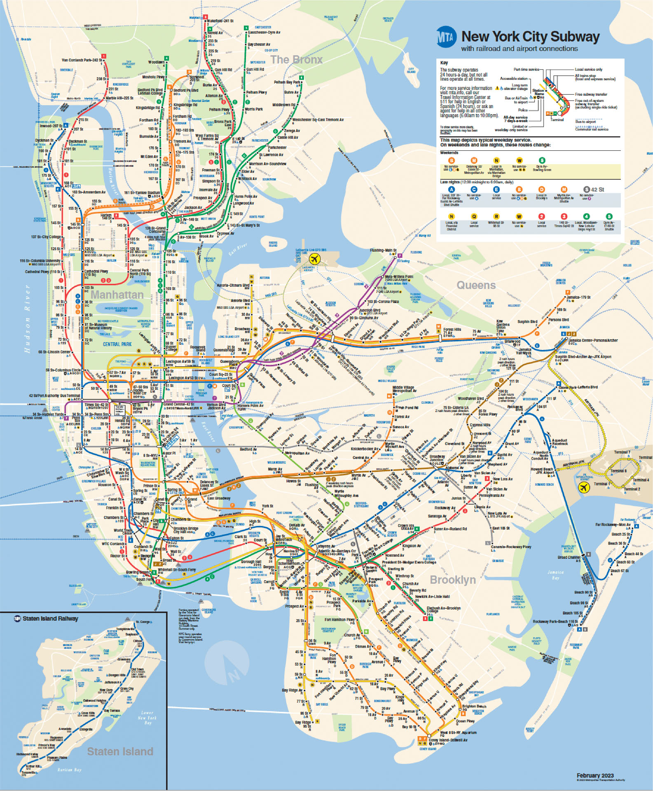
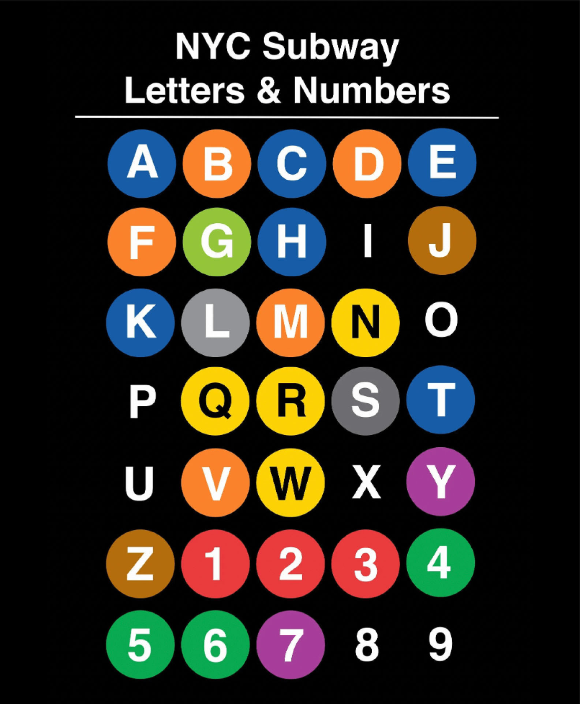

Subway
The NYC subway may seem intimidating at first.
Here are some resources to help you out.
NYC Subway Map & Trains


Helpful Resources
Here are some helpful resources that helped me when I first came to New York City. The subway might seem intimidating at first, but once you get the hang of it is the easiest way to navtigate through the city. Good luck!